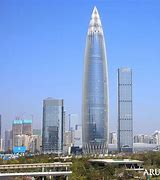
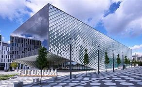
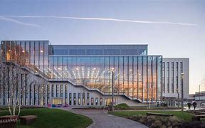

Arup stands out to me because of its forward-thinking approach to integrating advanced technologies, especially AI, into its projects. As the world moves towards digital transformation, Arup is at the forefront of using cutting-edge digital tools to improve the built environment. I am particularly excited about how AI and machine learning are being leveraged to optimize complex designs, streamline construction processes, and even predict long-term sustainability impacts. The digital side of Arup's work involves using data analytics, simulation, and AI-driven design processes to create solutions that are not only efficient but also environmentally responsible. This innovative approach aligns with my own interests in how AI can be used to solve real-world challenges, from smart cities to sustainable infrastructure. I look forward to the potential of contributing to such impactful projects where technology plays a central role in shaping a better future.
I chose Computing, Business, and History as my GCSE options, as I have always had a strong interest in the intersection of technology, business, and the past. My academic interests have since evolved, and I plan to pursue A-Levels in Computing, Mathematics, and Chemistry to deepen my knowledge in areas I find both intellectually stimulating and practically relevant. I am particularly drawn to the field of Artificial Intelligence and Computing, where I aim to combine my analytical skills and passion for technology. My long-term goal is to study AI and Computing at the University of Birmingham, where I hope to further develop my skills and knowledge, eventually contributing to innovative solutions in the world of technology and business. The combination of logical thinking from mathematics, problem-solving from computing, and a strong scientific foundation from chemistry will enable me to make valuable contributions to future advancements in AI.
Outside of academics, I enjoy a wide range of hobbies that keep me both mentally and physically active. Chess has been a longtime interest of mine, where I enjoy developing strategic thinking and problem-solving skills. Martial arts is another passion, which not only keeps me fit but also teaches discipline, perseverance, and focus. Gaming is a great way for me to unwind and engage with creative worlds, often requiring strategic planning and quick decision-making. I also enjoy reading, which broadens my knowledge and perspective, especially in areas related to technology, business, and history. Swimming is another way I stay fit and clear my mind, balancing both mental and physical well-being. As for food, I’m always partial to a good meal—especially dishes with rich flavors like Italian pasta or Japanese sushi, which I find both satisfying and comforting.
